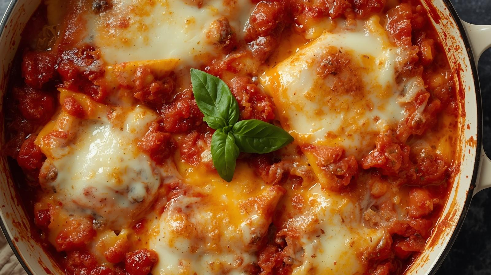

Lasagna

Description
Lasagne is one of Italy's most representative pasta dishes, made by layering flat sheets of pasta with meat sauce, béchamel sauce, and cheese before baking in the oven. Characterised by its rich flavour and the combination of melted cheese, it is loved by a wide range of generations, from adults to children.
Though it requires some effort, it is a splendid dish perfect for parties and entertaining.
Ingredients
- Meat Sauce
- Minced pork: 200g
- Onion: 1/2
- Carrot: 1/2
- Celery: 1/4 stalk
- Tinned chopped tomatoes: 1 tin (400g)
- Red wine: 50ml
- Stock cube: 1
- Bay leaf: 1
- Olive oil: 1 tbsp
- Salt, pepper: to taste
- Béchamel Sauce (White Sauce)
- Butter: 30g
- Plain flour: 30g
- Milk: 300ml
- Salt, pepper: to taste
- Nutmeg: a pinch
- Other
- Lasagne sheets: 6 sheets (pre-cooked type, or ready-to-use type)
- Pizza cheese: 100g
- Parmigiano Reggiano (grated): 3 tbsp
- Olive oil (for greasing the dish): a little
Steps
- Making the meat sauce:
- Finely chop the onion, carrot and celery.
- Heat olive oil in a pan and fry the minced meat. Once it changes colour, add the chopped vegetables and continue frying.
- When the vegetables have softened, add red wine and reduce.
- Add tinned chopped tomatoes, a stock cube, and a bay leaf. Stir, cover, and simmer gently for 20-30 minutes. Season with salt and pepper.
- Make the béchamel sauce:
- Melt butter in a separate saucepan. Add plain flour and cook gently over a low heat. Once the floury taste disappears, gradually add milk, stirring constantly to prevent lumps.
- Once thickened, season with salt, pepper, and nutmeg.
- Assemble the lasagne:
- Preheat the oven to 200°C.
- Lightly brush the inside of an ovenproof dish with olive oil.
- Spread a thin layer of béchamel sauce over the base of the dish, then arrange lasagne sheets on top.
- Layer meat sauce, béchamel sauce, and pizza cheese over this.
- Repeat this process until the lasagne sheets are used up, finishing with a generous layer of béchamel sauce, pizza cheese, and Parmigiano Reggiano.
- Baking:
- Bake in the 200°C oven for 20-25 minutes, until the top is golden brown.
- Once baked, allow to rest briefly before cutting into portions.
Home